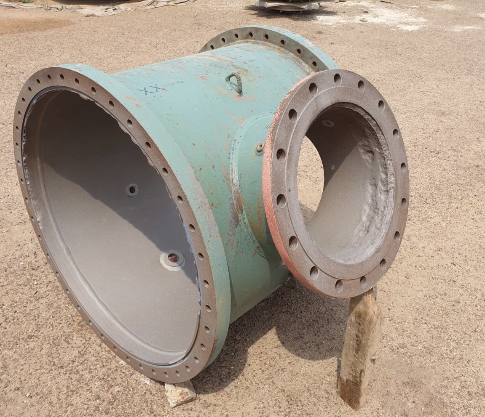
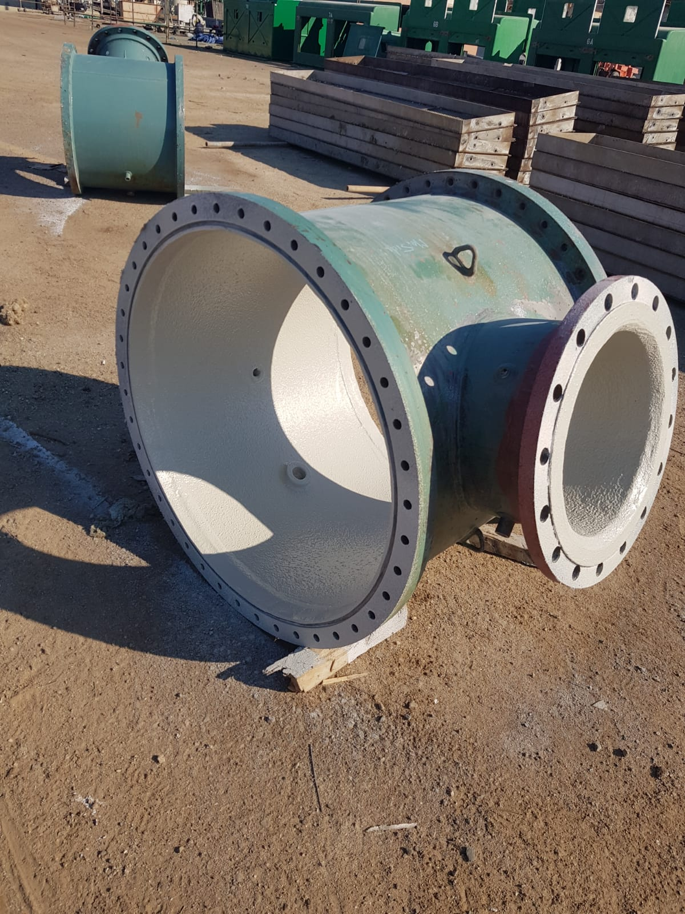
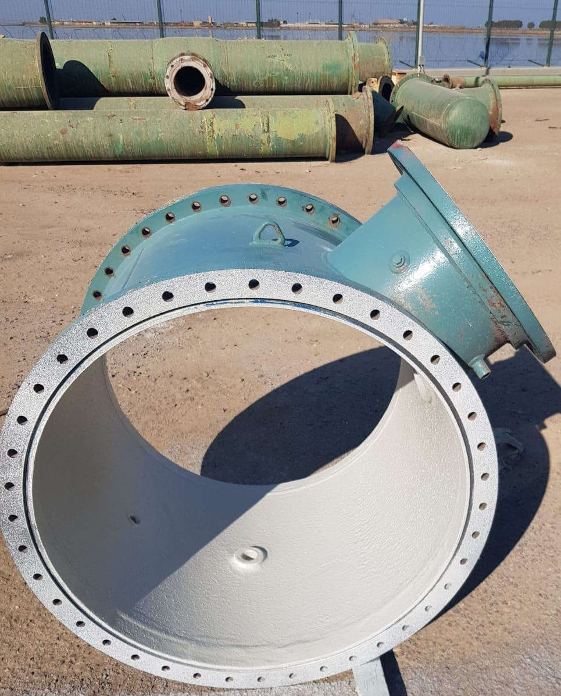
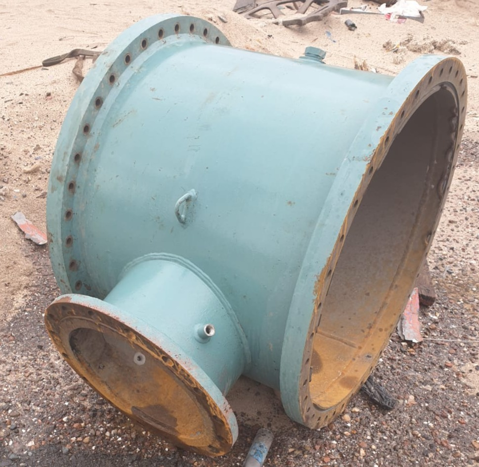

Restoring critical seawater cooling infrastructure with advanced glass flake vinyl ester lining after severe corrosion damage
A major power station in Kuwait faced a critical maintenance challenge: the seawater cooling system's T-connection piping had suffered severe corrosion and deep pitting from years of continuous seawater exposure. The aggressive chloride-rich environment of Gulf seawater had eaten into the metal substrate, creating dangerous bidding (pitting) that compromised the structural integrity of the pipe fitting.
Left untreated, this corrosion would lead to catastrophic failure — potential flooding, equipment damage, and costly unplanned shutdowns at the power station. Traditional repair methods (full pipe replacement) would require extended downtime and significant capital expenditure.


Seawater — particularly in the Arabian Gulf where salinity levels exceed 40 ppt and temperatures regularly surpass 35°C — creates one of the most corrosive natural environments on earth. The combination of high chloride concentration, dissolved oxygen, and elevated temperatures accelerates metal degradation exponentially. Standard carbon steel loses 0.1–0.5 mm per year in these conditions.
Primary Surface Solutions deployed a glass flake vinyl ester lining system — the gold standard for seawater corrosion protection in power generation and marine environments. This advanced coating technology uses overlapping glass flakes suspended in a vinyl ester resin matrix to create a near-impermeable barrier against chemical attack.
Abrasive blast cleaning to SA 2.5 / NACE 2 standard, removing all corrosion products, scale, and contaminants to achieve the required surface profile for optimal adhesion.
High-build vinyl ester primer applied to penetrate the pitted surface and provide a chemical bond between the steel substrate and the glass flake topcoat system.
Multiple coats of glass flake vinyl ester applied to achieve specified DFT (dry film thickness). The overlapping glass flakes create a tortuous path that prevents seawater permeation to the substrate.
Holiday (spark) testing, DFT measurements, adhesion pull-off tests, and visual inspection to ensure 100% coverage and specification compliance.



The glass flake vinyl ester lining system successfully rehabilitated the corroded T-connection, restoring it to full operational capability and providing long-term protection against the aggressive seawater environment.
Our glass flake vinyl ester systems protect against the harshest chemical and marine environments. Let's discuss your project.